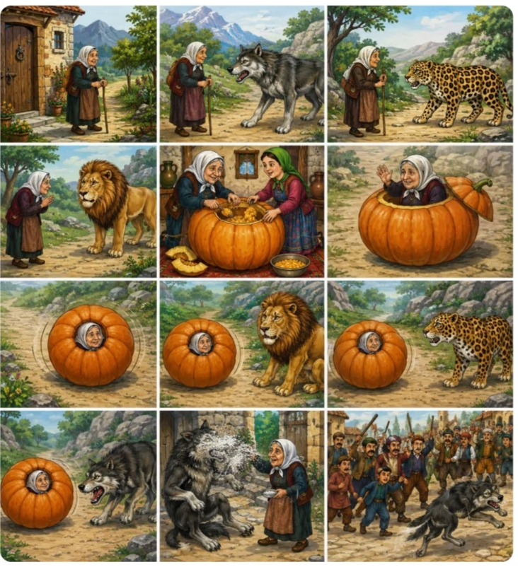

قصة اليقطينة المتدحرجة (القرعة المتدحرجة)
كان يا ما كان، في قديم الزمان، كانت هناك امرأة عجوز تعيش وحدها. وفي يوم من الأيام أرادت أن تزور ابنتها الوحيدة. رتّبت شؤون بيتها، وأغلقت باب منزلها، ثم انطلقت في طريقها تمشي حتى وصلت إلى سفح جبل.
وفجأة ظهر أمامها
ذئب
ضخم،
واعترض طريقها وقال:
— إلى أين تذهبين أيتها العجوز؟
لقد حان وقت أن
آكلك!
فقالت العجوز: — يا بني، أنا الآن عجوز هزيلة، ليس في جسدي إلا الجلد و العظم. دعني أذهب إلى بيت ابنتي، فآكل وأستريح حتى أسمن، ثم أعود إليك فتأكلني.
فكّر الذئب قليلاً ثم قال: — حسنًا، اذهبي، لكنني سأنتظرك هنا.
مضت العجوز في طريقها حتى لقيت نمرًا، فقال لها: — إلى أين تذهبين أيتها العجوز؟ لن أدعك تمضين، فسوف آكلك.
فقالت: — أنا عجوز ضعيفة، لا لحم في جسدي. دعني أذهب إلى ابنتي، فآكل وأقوى، ثم أرجع إليك.
فقال النمر: — لا بأس، اذهبي، لكنني سأنتظرك هنا.
ثم واصلت سيرها حتى قابلت الأسد، ملك الغابة. زأر الأسد وقال: — إلى أين تذهبين أيتها العجوز؟ تعالي، فقد عزمت على أكلك.
فقالت العجوز: — أيها الأسد الكريم، يا ملك الغابة، إنني الآن مجرد جلد و عظم، ولن تجد فيّ ما يشبعك. دعني أذهب إلى ابنتي، فإذا سمنت وعدت، أكلتني.
ورأى الأسد أن كلامها معقول، فقال: — حسنًا، اذهبي، لكنني سأنتظرك في هذا المكان.
واصلت العجوز طريقها حتى وصلت إلى بيت ابنتها.
فقالت لابنتها: — إذا ذهبتِ إلى السوق، فاشترِي لي يقطينة كبيرة جدًا
فذهبت الابنة واشترت يقطينة ضخمة، ثم أفرغتا ما بداخلها حتى أصبحت مجوفة. دخلت العجوز داخلها، ثم قالت لابنتها: — ادفعيها دفعة قوية، لتتدحرج بي في الطريق.
فدفعتها الابنة، وأخذت اليقطينة تتدحرج حتى وصلت إلى الأسد.
فقال الأسد: — أيتها اليقطينة المتدحرجة، هل رأيتِ عجوزًا مرت من هنا؟
فأجابت العجوز من داخلها: — والله ما رأيتها، وبالله ما رأيتها، لم أرها بين الحجارة ولا بين الأشجار. ادفعني دعني أمضي.
فدفعها الأسد، فواصلت طريقها.
ثم وصلت إلى النمر، فقال: — أيتها اليقطينة المتدحرجة، هل رأيتِ عجوزًا؟
فأجابت: — والله ما رأيتها، وبالله ما رأيتها، لم أرها بين الحجارة ولا بين الأشجار. ادفعني دعني أمضي.
فدفعها النمر، فتدحرجت من جديد.
فأجابت: — والله ما رأيتها، وبالله ما رأيتها، لم أرها بين الحجارة ولا بين الأشجار. ادفعني دعني أمضي.
فدفعها النمر، فتدحرجت من جديد.
ثم وصلت إلى الذئب، فقال: — أيتها اليقطينة المتدحرجة، هل رأيتِ عجوزًا؟
فقالت من داخلها: — والله ما رأيتها، وبالله ما رأيتها، لم أرها بين الحجارة ولا بين الأشجار. ادفعني دعني أمضي.
لكن الذئب دفعها بقوة شديدة، فاصطدمت بصخرة كبيرة، وانشطرت إلى نصفين، وخرجت العجوز منها.
فقال الذئب: — ها قد أمسكت بك! أردتِ أن تهربي مني، والآن سألتهمك.
فقالت العجوز: — أيها الذئب، والله ما كنت أهرب منك، وإنما دخلت هذه اليقطينة لأصل إليك بسرعة. ولكنني اتسخت من الداخل، وأصبحت تفوح مني رائحة اليقطين. فإذا كنت مصرًّا على أكلي، فدعني أولًا أذهب إلى الحمّام لأغتسل، حتى تأكلني وأنا نظيفة، ولا يقول الناس إنك أكلت عجوزًا قذرة.
فكّر الذئب وقال: — صدقتِ، ستكونين أشهى إذا كنتِ نظيفة. لكنني سأرافقك حتى لا تهربي.
فقالت: — كما تشاء.
فلما وصلا إلى الحمّام، تناولت العجوز قبضة من الرماد، ونثرتها في عيني الذئب. فأخذ يصرخ من شدة الألم، وارتفع عواؤه في المكان.
فسمع أهل القرية صراخه، فجاؤوا مسرعين بالعصي والهراوات، وضربوا الذئب حتى فرّ هاربًا، يجرّ أذيال الخيبة، ولم يعد يُرَ في تلك الديار بعد ذلك أبدًا.
تمّت الحكاية.
داستان کدو تنبل غلتان یکی بود یکی نبود، در زمانهای قدیم، پیرزنی تنها در خانهای کوچک زندگی میکرد. روزی با خود گفت: «دلم برای دخترم تنگ شده است، میروم به دیدنش.» خانهاش را مرتب کرد، در را بست و در راه شروع به حرکت کرد. در میان راه، گرگ بزرگی ظاهر شد و گفت: ای پیرزن، به کجا میروی؟ وقت آن رسیده که تو را بخورم! پیرزن گفت: ای پسرم، من پیر و ضعیف هستم، چیزی جز پوست و استخوان در بدنم نمانده است. بگذار به خانه دخترم بروم، غذا بخورم و استراحت کنم تا چاق شوم، سپس برمیگردم و مرا بخور. گرگ کمی فکر کرد و گفت: خوب، برو، اما من اینجا منتظرت میمانم.
| عربی | فارسی |
|---|---|
| قَرْعَة | کدو |
| عَجُوز | پیرزن |
| غابَة | جنگل |
| ذِئْب | گرگ |
| أَسَد | شیر |
| ثَعْلَب | روباه |
| امرأة عجوز | پیرزن |
| تعيش وحدها | تنها زندگی میکند |
| تزور | به دیدن میرود |
| ابنتها | دخترش |
| الطريق | راه |
| ذئب ضخم | گرگ بزرگ |
| آكل | میخورم |
| الجلد والعظم | پوست و استخوان |
| سمين | چاق |
| ضعيف | ضعیف |
| الحمّام | حمام |
| الرماد | خاکستر |
| القرية | روستا |
| الحجارة | سنگها |
| الأشجار | درختان |
| السوق | بازار |
| بيت | خانه |
| هرب | فرار کرد |
| خرجت | بیرون آمد |
| دفعت | هل داد |
| تنتظر | منتظر میماند |
در این بخش از داستان فعل نهیِ صریح وجود ندارد.
لا يوجد فعل نهي صريح في هذا الجزء من القصة.